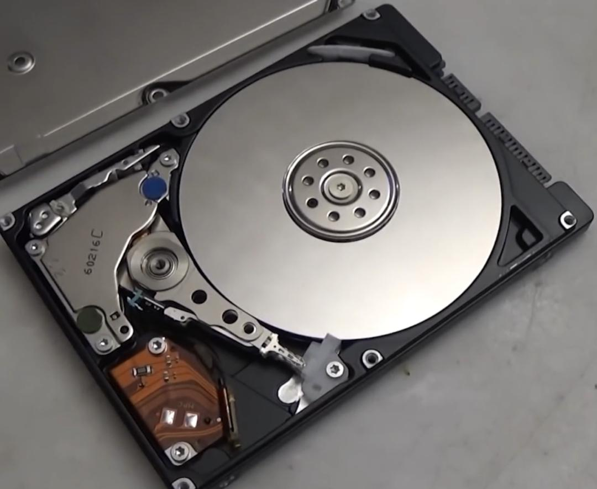
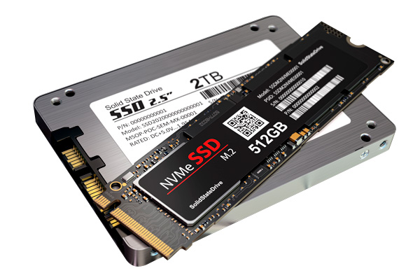
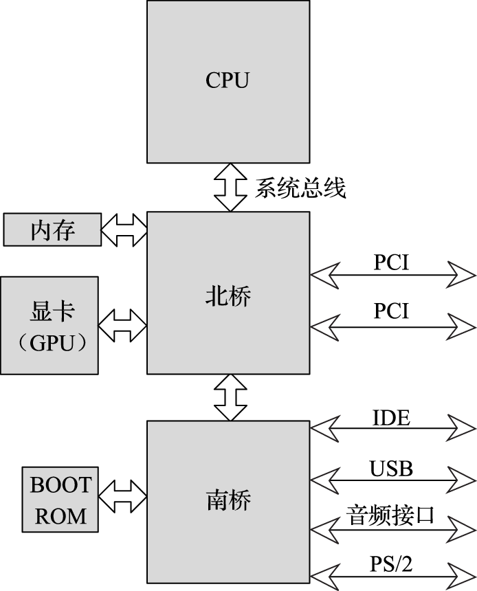
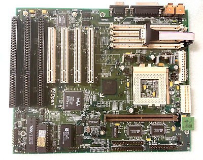
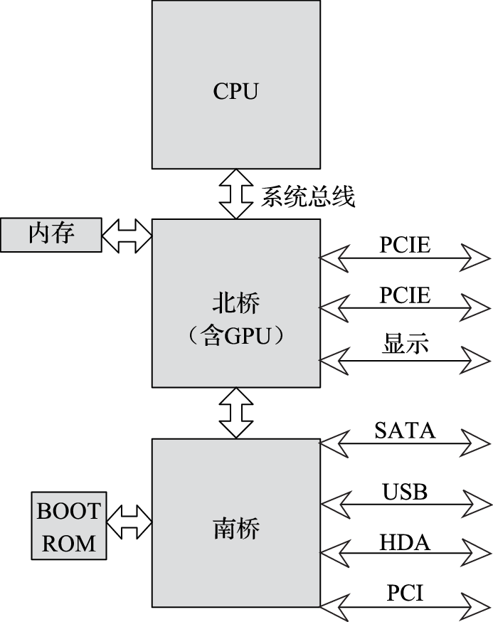
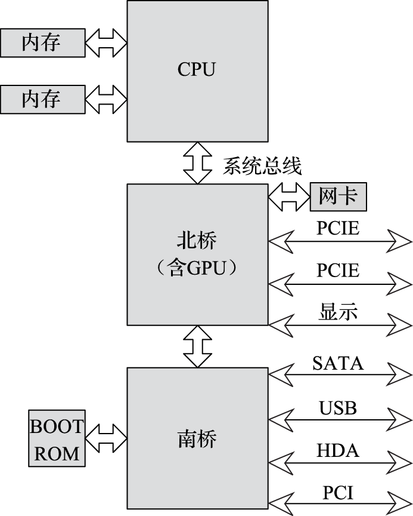
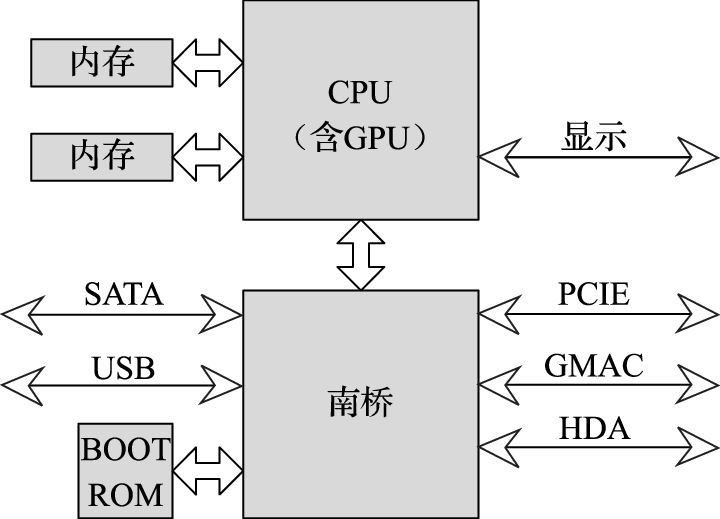
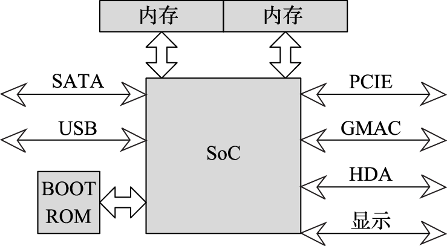

第一章 计算机组成原理和架构
第一章 计算机组成原理和架构
从本章开始将介绍计算机组成结构，从硬件的角度来看看计算机是怎样构成的，冯·诺依曼结构是现代计算机的结构理论模型。本章从冯·诺依曼的理论模型开始，介绍计算机系统的各个组成部分，并与现代计算机的具体实现相对应。
2.1 冯·诺依曼结构
现代计算机都采用存储程序结构，又称为冯·诺依曼结构，是1945年匈牙利籍数学家冯·诺依曼受宾夕法尼亚大学研制的ENIAC计算机结构的启发提出的，是世界上第一个完整的计算机体系结构。
冯·诺依曼结构的主要特点是：计算机由存储器、运算器、控制器、输入设备和输出设备五部分组成。
- 运算器和控制器合称为中央处理器（Central Processing Processor，简称CPU）；
- 存储器是按地址访问的线性编址的一维结构，每个单元的位数固定；
- 采用存储程序方式，即指令和数据不加区别混合存储在同一个存储器中；
- 控制器通过执行指令发出控制信号控制计算机的操作。指令在存储器中按其执行顺序存放，由指令计数器指明要执行的指令所在的单元地址。指令计数器一般按顺序递增，但执行顺序可按运算结果或当时的外界条件而改变；
- 以运算器为中心，输入输出设备与存储器之间的数据传送都经过运算器。冯·诺依曼计算机的工作原理如图所示。
2.2 计算机的组成部件
按照冯·诺依曼结构，计算机包含五大部分，即运算器、控制器、存储器、输入设备和输出设备。

2.2.1 运算器
运算器是计算机中负责计算（包括算术计算和逻辑计算等）的部件。运算器包括算术和逻辑运算部件（Arithmetic Logic Units，简称ALU）、移位部件、浮点运算部件（Floating Point Units，简称FPU）、向量运算部件、寄存器等。其中，复杂运算如乘除法、开方及浮点运算可用程序实现或由运算器实现。寄存器既可用于保存数据，也可用于保存地址。运算器还可设置条件码寄存器等专用寄存器，条件码寄存器保存当前运算结果的状态，如运算结果是正数、负数或零，是否溢出等。
运算器支持的运算类型经历了从简单到复杂的过程。最初的运算器只有简单的定点加减和基本逻辑运算，复杂运算如乘除通过加减、移位指令构成的数学库完成；后来逐渐出现硬件定点乘法器和除法器。在早期的微处理器中，浮点运算器以协处理器的形式出现在计算机中（如Intel 8087协处理器），包含二进制浮点数的加、减、乘、除等运算，现代的通用微处理器则普遍包含完整的浮点运算部件。20世纪90年代开始，微处理器中出现了单指令多数据（Single Instruction Multiple Data，简称SIMD）的向量运算器，部分处理器还实现了超越函数硬件运算单元，如sin、cos、exp、log等。部分用于银行业务处理的计算机（如IBM Power系列）还实现了十进制定、浮点数的运算器。
随着晶体管集成度的不断提升，处理器中所集成的运算器的数量也持续增加，通常将具有相近属性的一类运算组织在一起构成一个运算单元。不同的处理器有不同的运算单元组织，有的倾向于每个单元大而全，有的倾向于每个单元的功能相对单一。处理器中包含的运算单元数目也逐渐增加，从早期的单个运算单元逐渐增加到多个运算单元。由于运算单元都需要从寄存器中读取操作数，并把结果写回寄存器，因此处理器中运算单元的个数主要受限于寄存器堆读写端口个数。运算单元一般按照定点、浮点、访存、向量等大类来组织，也有混合的，如SIMD部件既能做定点也能做浮点运算，定点部件也可以做访存地址计算等。
2.2.2 控制器
2.2.3 存储器
存储器存储程序和数据，又称主存储器或内存，一般用动态随机访问存储器（Dynamic Random Access Memory，简称DRAM）实现。CPU可以直接访问它，IO设备也频繁地与它交换数据。存储器的存取速度往往满足不了CPU的快速要求，容量也满足不了应用的需要，为此将存储系统分为高速缓存（Cache)、主存储器和辅助存储器三个层次。Cache存放当前CPU最频繁访问的部分主存储器内容，可以采用比DRAM速度快但容量小的静态随机访问存储器（Static Random Access Memory，简称SRAM）实现。数据和指令在Cache和主存储器之间的调动由硬件自动完成。为扩大存储器容量，使用磁盘、磁带、光盘等能存储大量数据的存储器作为辅助存储器。计算机运行时所需的应用程序、系统软件和数据等都先存放在辅助存储器中，在运行过程中分批调入主存储器。数据和指令在主存储器和辅助存储器之间的调动由操作系统完成。CPU访问存储器时，面对的是一个高速（接近于Cache的速度）、大容量（接近于辅助存储器的容量）的存储器。现代计算机中还有少量只读存储器（Read Only Memory，简称ROM）用来存放引导程序和基本输入输出系统（Basic Input Output System，简称BIOS）等。现代计算机访问内存时采用虚拟地址，操作系统负责维护虚拟地址和物理地址转换的页表，集成在CPU中的存储管理部件（Memory Management Unit，简称MMU）负责把虚拟地址转换为物理地址。
存储器的主要评价指标为存储容量和访问速度。存储容量越大，可以存放的程序和数据越多。访问速度越快，处理器访问的时间越短。对相同容量的存储器，速度越快的存储介质成本越高，而成本越低的存储介质则速度越低。目前人们发明的用于计算机系统的存储介质主要包括以下几类：
1）磁性存储介质。如硬盘、磁带等，特点是存储密度高、成本低、具有非易失性（断电后数据可长期保存），缺点是访问速度慢。磁带的访问速度在秒级，磁盘的访问速度一般在毫秒级，这样的访问速度显然不能满足现代处理器纳秒级周期的速度要求。
2）闪存（Flash Memory）。同样是非易失性的存储介质，与磁盘相比，它们的访问速度快，成本高，容量小。随着闪存工艺技术的进步，闪存芯片的集成度不断提高，成本持续降低，闪存正在逐步取代磁盘作为计算机尤其是终端的辅助存储器。
3）动态随机访问存储器（DRAM）。属于易失性存储器（断电后数据丢失）。特点是存储密度较高（存储一位数据只需一个晶体管），需要周期性刷新，访问速度较快。其访问速度一般在几十纳秒级。
4）静态随机访问存储器（SRAM）。属于易失性存储器（断电后数据丢失）。存储密度不如DRAM高（SRAM存储一位数据需要4-8个晶体管），不用周期性刷新，但访问速度比DRAM快，可以达到纳秒级，小容量时能够和处理器核工作在相同的时钟频率。
现代计算机中把上述不同的存储介质组成存储层次，以在成本合适的情况下降低存储访问延迟，如图中所示，越往上的层级，速度越快，但成本越高，容量越小；越往下的层级，速度越慢，但成本越低，容量越大。图所示存储层次中的寄存器和主存储器直接由指令访问，Cache缓存主存储器的部分内容；而非易失存储器既是辅助存储器，又是输入输出设备，非易失存储器的内容由操作系统负责调入调出主存储器。

存储层次的有效性，依赖于程序的访存局部性原理，包含两个方面：一是时间局部性，指的是如果一个数据被访问，那么在短时间内很有可能被再次访问；二是空间局部性，指的是如果一个数据被访问，那么它的邻近数据也很有可能被访问。利用局部性原理，可以把程序近期可能用到的数据存放在靠上的层次，把近期内不会用到的数据存放在靠下的层次。通过恰当地控制数据在层次间的移动，使处理器需要访问的数据尽可能地出现在靠近处理器的存储层次，可以大大提高处理器获得数据的速度，从而近似达到用最快的存储器构建一个容量很大的单级存储的效果。现代计算机一般使用多端口寄存器堆实现寄存器，使用SRAM来构建片上的高速缓存（Cache），使用DRAM来构建程序的主存储器（也称为主存、内存），使用磁盘或闪存来构建大容量的存储器。
2.2.4 输入/输出设备
计算机除了需要内存存放程序的中间数据外，还需要具有永久记忆功能的存储体来存放需要较长时间保存的信息。比如操作系统的内核代码、文件系统、应用程序和用户的文件数据等。该存储器除了容量必须足够大之外，价格还要足够便宜，同时速度还不能太慢。在计算机的发展历史上，磁性存储材料正好满足了以上要求。磁性材料具有断电记忆功能，可以长时间保存数据；磁性材料的存储密度高，可以搭建大容量存储系统；同时，磁性材料的成本很低。
人们目前使用的大容量硬盘，也叫做机械硬盘 (HDD - Hard Disk Drive)，就是一种磁性存储介质。硬盘的构造原理为：将磁性材料覆盖在圆形碟片（或者说盘片）上，通过一个读写头（磁头）悬浮在碟片表面来感知存储的数据。通过碟片的旋转和磁头的径向移动来读写碟片上任意位置的数据。碟片被划分为多个环形的轨道（称为磁道，Track）来保存数据，每个磁道又被分为多个等密度（等密度数据）的弧形扇区（Sector）作为存储的基本单元。硬盘在工作时，盘片是一直旋转的，当想要读取某个扇区的数据时，首先要将读写头移动到该扇区所在的磁道上，当想要读写的扇区旋转到读写头下时，读写头开始读写数据。

- 无机械部件： SSD 不像 HDD 那样依赖旋转的盘片和移动的磁头来读写数据。它使用基于 **NAND 闪存** 的固态存储单元（类似于你U盘或手机存储中的闪存芯片）来存储数据；
- 电子读写：数据以电荷的形式存储在闪存芯片中，读写操作是通过电子信号完成的，没有任何物理移动。
SSD 的形态如图所示。

| 特性 | 固态硬盘 (SSD) | 机械硬盘 (HDD) |
|---|---|---|
| 存储介质 | 闪存芯片 (NAND Flash) | 磁性盘片 |
| 工作方式 | 电子读写，无移动部件 | 机械臂驱动磁头在旋转盘片上读写 |
| 速度 | 极快 (读写速度、寻道时间远低于HDD) | 相对较慢 |
| 噪音 | 无噪音 | 有盘片旋转和磁头移动的噪音 |
| 抗震性 | 强 (无移动部件) | 弱 (易受物理冲击损坏) |
| 功耗 | 通常较低 | 通常较高 |
| 体积/形状 | 更小更灵活 (有M.2, U.2等形状) | 通常较大 (常见为2.5英寸或3.5英寸) |
| 单位容量成本 | 相对较高 | 相对较低 (尤其大容量时) |
| 写入寿命 | 闪存单元有写入次数限制 (但控制器有磨损均衡技术延长寿命) | 理论上无写入次数限制 (但机械部件有寿命) |
2.3 计算机硬件结构发展
随着应用需求的变化和工艺水平的不断提升，冯·诺依曼结构中的控制器和运算器逐渐演变为计算机系统中的中央处理器部分，而输入、输出设备统一通过北桥和南桥与中央处理器连接，中央处理器中的图形处理功能则从中央处理器中分化出来形成专用的图形处理器。因此，现代计算机系统的硬件结构主要包括了中央处理器、图形处理器、北桥及南桥等部分。
中央处理器（Central Processing Unit，简称CPU）主要包含控制器和运算器，在发展的过程中不断与其他部分融合。传统意义上的中央处理器在处理器芯片中更多地体现为处理器核，现代的处理器芯片上往往集成多个处理器核。
图形处理器（Graphic Processing Unit，简称GPU）是一种面向2D和3D图形、视频、可视化计算和显示优化的处理器。作为人机交互的重要界面，GPU在计算机体系结构发展的过程中，担任了越来越重要的角色。除了对图形处理本身之外，还开始担负科学计算加速器的任务。
北桥（North Bridge）是离CPU最近的芯片，主要负责控制显卡、内存与CPU之间的数据交换，向上连接处理器，向下连接南桥。
南桥（South Bridge）主要负责硬盘、键盘以及各种对带宽要求较低的IO接口与内存、CPU之间的数据交换。
2.3.1 CPU-GPU-北桥-南桥四片结构
现代计算机的一种早期结构是CPU-GPU-北桥-南桥结构。在该结构中，计算机系统包含四个主要芯片，其中CPU（处理器）芯片、北桥芯片和南桥芯片一般是直接以芯片的形式安装或焊接在计算机主板上，而GPU则以显卡的形式安装在计算机主板的插槽上。
在CPU-GPU-北桥-南桥四片结构中，计算机的各个部件根据速度快慢以及与处理器交换数据的频繁程度被安排在北桥和南桥中。CPU通过处理器总线（也称系统总线）和北桥直接相连，北桥再通过南北桥总线和南桥相连，GPU一般以显卡的形式连接北桥。内存控制器集成在北桥芯片中，硬盘接口、USB接口、网络接口、音频接口以及鼠标、键盘等接口放在南桥芯片中。此外，在北桥上还会提供各种扩展接口用于其他功能卡的连接。采用该结构的微机系统如图所示。

与英特尔奔腾处理器搭配的430HX芯片组就采用了这样的四片结构。其北桥芯片使用82439HX，南桥芯片采用82371SB，通过PCI总线扩展外接显卡，与处理器组成四片结构，作为计算机系统的主要部分，如下图所示。

2.3.2 CPU-北桥-南桥三片结构
现代计算机的一种典型结构是CPU-北桥-南桥结构。在该结构中，系统包含三个主要芯片，分别为CPU芯片、北桥芯片和南桥芯片。三片结构与四片结构最大的区别是，前者GPU功能被集成到北桥，即一般所说的集成显卡。
在CPU-北桥-南桥三片结构中，CPU通过处理器总线和北桥直接相连，北桥再通过南北桥总线和南桥相连。内存控制器、显示功能以及高速IO接口（如PCIE等）集成在北桥芯片中，硬盘接口、USB接口、网络接口、音频接口以及鼠标、键盘等接口部件放在南桥芯片中。随着计算机技术的发展，更多的高速接口被引入计算机体系结构中，在北桥上集成的IO接口的速率也不断提升。采用该结构的微机系统如图所示。

英特尔845G芯片组就采用类似的三片结构。其北桥芯片使用82845G，集成显示接口，南桥芯片采用82801DB，与处理器组成三片结构，作为计算机系统的主要部分。
这是一个有脚注的句子[^1]
2.3.2 CPU-弱北桥-南桥三片结构
随着工艺和设计水平的不断提高，芯片的集成度不断提高，单一芯片中能够实现的功能越来越复杂。内存接口的带宽需求超过了处理器与北桥之间连接的处理器总线接口，导致内存的实际访问性能受限于处理器总线的性能。而伴随着处理器核计算性能的大幅提升，存储器的性能提升却显得幅度较小，这两者的差异导致计算机系统性能受到存储器系统发展的制约，这就是存储墙问题。
因此，对计算机系统性能影响显著的内存控制器开始被集成到CPU芯片中，从而大幅降低了内存访问延迟，提升了内存访问带宽，这在一定程度上缓解了存储墙问题。
于是，北桥的功能被弱化，主要集成了GPU、显示接口、高速IO接口（例如PCIE接口等）。采用该结构的微机系统如图所示。

相比英特尔，AMD的处理器最早将内存控制器集成到处理器芯片中，780E芯片组就采用上述三片结构，北桥芯片使用RS780E，集成HD3200 GPU，南桥芯片使用SB710，与处理器组成三片结构，作为计算机系统的主要部分。
2.3.4 CPU-南桥两片结构
在计算机系统不断发展的过程中，图形处理器性能也在飞速发展，其在系统中的作用也不断被开发出来。除了图形加速以外，对于一些科学计算类的应用，或者是一些特定的算法加速程序，图形处理器发挥着越来越大的作用，成为特定的运算加速器，其与中央处理器之间的数据共享也越来越频繁，联系越来越密切。
随着芯片集成度的进一步提高，图形处理器也开始被集成到CPU芯片中，于是，北桥存在的必要性就进一步降低，开始和南桥合二为一，形成CPU-南桥结构，如图所示。

在这个结构中，CPU芯片集成处理器核、内存控制器和GPU等主要部件，对外提供显示接口、内存接口等，并通过处理器总线和南桥相连。南桥芯片则包含硬盘、USB、网络控制器以及PCIE/PCI、LPC等总线接口。由于GPU和CPU都需要大量访问内存，会带来一些访存冲突，而且相对来说，GPU对于实时性的要求更高，即访存优先级会更高一些，这在一定程度上会影响CPU的性能。实际上，处理器中集成的GPU性能相比独立显卡中的GPU性能会稍弱。
当然，也有一些两片结构是将GPU集成在南桥芯片中。这样在南桥上可以实现独立的显存供GPU使用，这在某些条件下更有利于GPU性能的发挥，且CPU升级时带来的开销会更小。
2.3.5 SoC单片结构
片上系统（System on Chip，简称SoC）是一种单片计算机系统解决方案，它在单个芯片上集成了处理器、内存控制器、GPU以及硬盘、USB、网络等IO接口，使得用户搭建计算机系统时只需要使用单个主要芯片即可，如图所示。Apple的M系列平台采用的就是SoC单片结构。
